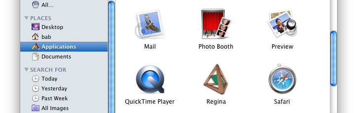

Troubleshooting and FAQ | |
| Prev | Next |
- 13.1. Running Regina
- 13.2. Python Scripting
- 13.3. Miscellaneous
13.1. Running Regina | |
| 13.1.1. | How do I start Regina? |
If you use GNU/Linux, look for Regina in your applications menu (for instance, the main GNOME or KDE menu). It might be classified under Science or Education. If all else fails, you can always start Regina from the command line by running regina-gui.
If you use macOS, you should have downloaded a drag-and-drop app bundle. You can start Regina simply by opening this app from wherever you dragged it to (typically the Applications folder).  If you use Windows, you can find Regina in the Start menu. Look for →→.
| |
| 13.1.2. | How can I run regina-python or the other command-line tools? |
If you downloaded a GNU/Linux package, these tools should all be in
If you downloaded a drag-and-drop app bundle for macOS,
these tools are all shipped inside it.
If you dragged Regina to the main
Applications folder, you can find them in
If you use Windows, the tool regina-python is not available. Windows. However, you can still use Python scripting in Regina's graphical user interface, by opening a graphical Python console or using script packets.
The other command-line tools (such as regfiledump,
tricensus and so on) are installed under
Windows beneath the
| |
| 13.1.3. | On macOS, do I need Fink any more? |
No! As of version 4.92, Regina ships as a standalone app
bundle that you can drag and drop straight into your Applications
folder. If you installed Fink for an earlier version of
Regina and you do not use it for anything else, you can remove
it: simply delete | |
13.2. Python Scripting | |
| 13.2.1. | Regina tells me that Python scripting has been disabled. |
This means that whoever built your version of Regina did not include Python support in the build. The best solution is to download a ready-made package from the Regina website. All of the ready-made packages should have Python support built in. If you need to build Regina yourself from source, make sure you have the Python development files installed. If not, Regina will warn you about this when you run cmake:
If you are stuck, please mail the authors for assistance,
including your | |
| 13.2.2. |
SnapPy has stopped working in the graphical user interface.
When I import SnapPy and try to create a manifold, I receive a
|
At the time of writing, SnapPy is not
compatible with multiple interpreters. If you run the graphical
user interface and import the
A workaround is to open one console, import
If you are not working directly with a data file, another option is to use the regina-python command-line tool. This only runs one instance of Python, and so avoids the problem. The problem appears to be rooted in Cython, which SnapPy uses for its Python bindings. The SnapPy and Regina authors are currently working to find a suitable workaround. | |
13.3. Miscellaneous | |
| 13.3.1. | I am having trouble compiling Regina. |
If you can, it is best to install Regina from a ready-made package. See the Regina website for a list of GNU/Linux distributions that have packages available. If you do need to build Regina yourself, the website offers help on building Regina from source. There is also a page on building Regina on different distributions, which suggests specific cmake options tailored to your particular type of machine. | |
| 13.3.2. | What is the test suite, and how do I run it? |
Sometimes building an application on different hardware or against different versions of libraries can produce unforseen bugs that do not appear on the developer's machine(s). To help guard against such problems, Regina ships with a rich test suite. The test suite asks Regina to perform different calculations that isolate different portions of its mathematical code, and it verifies that Regina gets all the answers correct. You can only run the test suite if you are building Regina from source yourself. If you download a ready-made package, the person who built the package should have already verified that Regina passes the test suite (as all of the packages on the Regina website do). You will also need CppUnit installed. Otherwise the test suite will run but only with the simpler Python and command-line utilities tests, not the rich and detailed C++ calculation engine tests.
To run the test suite, move into your main build
directory and type
We see from the output above that Regina passed all of its tests (and hopefully this is what you will see too). | |
| 13.3.3. | Something else not described in this list has gone wrong. |
Perhaps something crashed. Maybe the program gave the wrong answer. Or it could be just a little too slow? Please! - mail the authors and let us know. You are welcome to write to us directly (our email addresses are here). Or even better, use the GitHub issue tracking system so that the problem you report is publicly archived. This program is permanently in development. There is a very long TODO list, and chances are your problem is on it. And then again chances are it's not. So please, let us know what you think can be fixed or improved. | |

| Prev | Contents | Next |
| Contributing to Regina | Up | Bug Tracking and Feature Requests |